Вітальня · журнал «ДентАрт» 2013 №3 (72)
Доктор Галіп Гюрель: «Будьте чесні і відкриті, і це зробить вас сильними!»
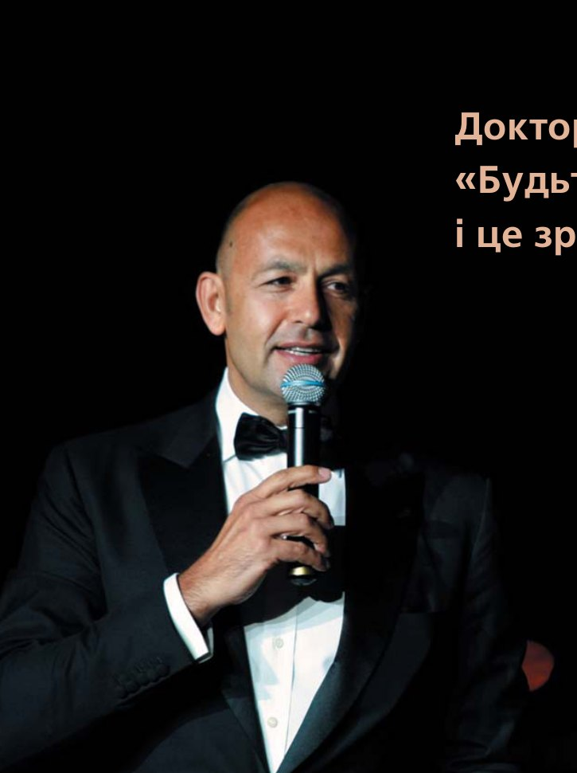
17 років тому доктор Галіп Гюрель заснував Турецьку академію естетичної стоматології. У 2011-2012 роках він був президентом Європейської академії естетичної стоматології, і тепер це звання носитиме довічно. Стоматологи різних країн приїжджають на курси в його «Галіп Гюрель Стаді Клаб» у Стамбулі, щоб навчитися підкорювати нові вершини майстерності.
Президент Української академії естетичної стоматології Сергій Радлінський зустрівся з колегою — відомим лектором, запрошеним професором університетів Нью-Йорка, Марселя і Стамбула — на традиційному щорічному конгресі ЄАЕС «Весняні зустрічі», який відбувся наприкінці травня на Криті. Розмова, як можуть переконатися читачі, вийшла багатоплановою і цікавою.
«Мене веде усе моє життя бажання пізнавати нове»
— Дорогий Галіпе, ми зустрілися з Вами 10 років тому, коли Ви виступали на 3-му конгресі Національної академії естетичної стоматології. Тоді відбулася презентація Вашої книги «Наука і мистецтво керамічних пластинчастих вінірів», яка за минуле десятиліття стала класикою. Ви тепер всесвітньо відомий стоматолог, викладач, лектор і лідер естетичної стоматології. Як Ви прийшли в стоматологію, що вплинуло на вибір саме цієї професії?
— Передусім хотілося б подякувати за такі слова! Я намагаюся домагатися кращого! Так, книга дуже популярна як стандарт, тому що це комбінація мистецтва і науки, і я спробував написати все про всілякі аспекти теми. Вийшло легко для розуміння і, сподіваюся, дуже естетично. Гадаю, саме це принесло успіх, і нині книгу перекладено дев'ятьма мовами.
А щодо запитання, як я прийшов у стоматологію... Мої батьки були дантистами. Тоді у нас не було такого доступу, як тепер в Інтернеті, до того, що відбувається у світі, і зазвичай син успадковував професію батька. У мене навіть ніколи не було розмови про те, щоб бути кимось іншим, не стоматологом. Ось, власне, як я починав. І, дякувати Богові, цей вибір — величезна удача, тому що я люблю свою професію, якій навчений. Адже так багато людей у світі здобувають освіту (я маю на увазі не лише стоматологію), а потім їм не подобається те, чим вони займаються! Так що я дуже втішений зі свого вибору. Я люблю стоматологію, маю до неї пристрасть і думаю: те, що мене веде усе моє життя, — це бажання пізнавати нове. Ми бачимо труднощі, ми долаємо їх і ми створюємо щось нове. Це те, що підштовхує нас і надихає.
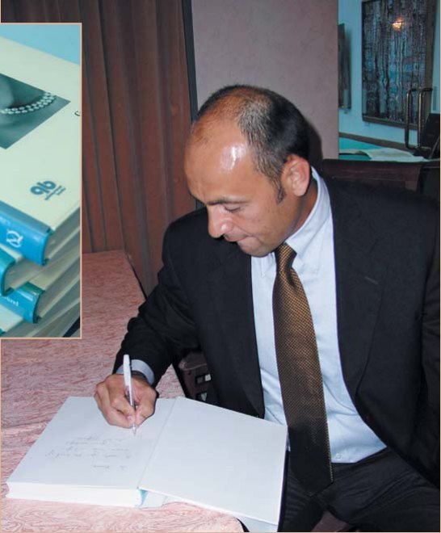
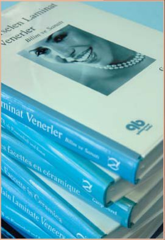
— У Навчальному центрі «Галіп Гюрель Стаді Клаб» у Стамбулі проходять практичні курси стоматологи зі всього світу. Тому, звичайно, Ви знаєте рівень кваліфікації стоматологів різних країн. Наскільки відрізняється рівень естетичної стоматології в різних країнах і на різних континентах? Як впливає на стоматологію глобалізація?
— Гадаю, глобалізація робить дуже великий вплив. Люди з певним рівнем приїжджають на мої курси. Серед них немає таких, хто взагалі нічого не знає про естетичну стоматологію. Це люди, котрі вже в естетичній стоматології, але зіткнулися з певними проблемами або хочуть прогресу, бажають вийти на вищий рівень. Ось які групи приїжджають на мої курси в Стамбул. І я дуже щасливий, що курси продано на 2 роки. Це дуже радує, що на те, що ми робимо в Стамбулі, приїжджають люди звідусіль: з Бразилії, Австралії, Нової Зеландії, Японії, Китаю, не кажучи вже про довколишні країни: європейські, близькосхідні, Україну. І це дуже цікаво — бачити, що люди від'їжджають зі сформованими уявленнями про те, як стати кращими в естетичній стоматології.
Ви маєте рацію — світ глобалізується, і багато що можна почерпнути, зокрема, з Інтернету. Але одну річ я хочу підкреслити: у наш час дуже просто отримати доступ до інформації, приміром, погуглити і прочитати якісь мої статті або деякі лекції. Але коли ви робите щось руками — це вже зовсім інший підхід. Так що навіть коли все дуже заглобалізовано, люди все одно долають відстані, щоб потрапити на курси, і 100% з них зможуть застосувати отримані знання не через роки розробок, а вже наступного понеділка. І це робить курси привабливими.
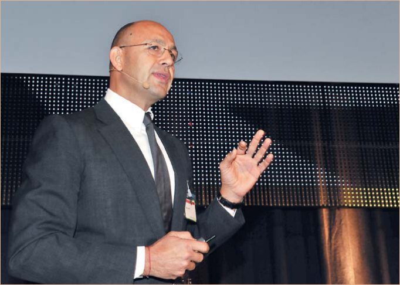
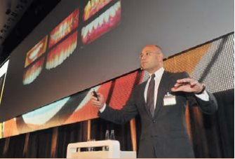
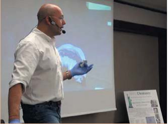
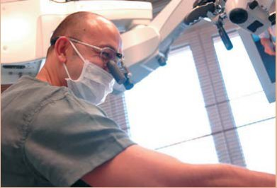
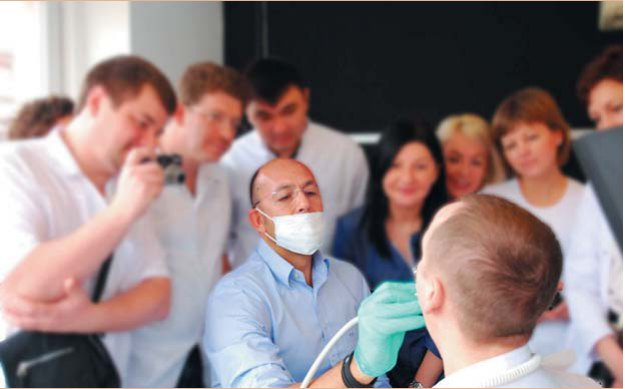
— Окрім своєї стоматологічної практики, Ви запрошений професор університетів Нью-Йорка, Марселя і Стамбула, багато виступаєте на конгресах у різних країнах. Яку частину свого життя Ви проводите в повітрі і чи продовжуєте займатися стоматологією на борту літака?
— Це питання, яке і я собі задаю з року в рік. Ви знаєте, є такі періоди в житті, які ви не можете контролювати. Після успіху книги мене стали запрошувати по всьому світу. Іноді ти почуваєш себе добре, іноді ти егоцентричний, іноді це твої друзі, яким ти не можеш сказати «ні». Так що довелося читати лекції, як божевільному, іноді по 40 лекцій на рік. Я не читаю в липні і серпні — це час для моєї сім'ї. Якщо ви віднімете ці два місяці і розділите час, що залишився, на 40 лекцій, вийде, що доводилося читати лекції майже кожен вікенд. Це зводило з глузду. І три роки тому я прийняв рішення серйозно пригальмувати з лекціями. І тепер я надзвичайно щасливий на хорошому рівні проводити тільки 15 лекцій за кордоном і 10 курсів у Стамбулі. Як на мене, це чудовий баланс і величезний позитивний вплив на мою приватну практику. Після того, як я зменшив кількість лекцій, стало значно більше часу, який я можу присвятити своїм пацієнтам. Більше часу на детальне планування лікування — і практика росте не стільки завдяки збільшенню кількості пацієнтів, скільки завдяки якості роботи, яку ми виконуємо впродовж року.
«Сподіваюся побачити Українську академію естетичної стоматології дуже сильною»
— У світі багато професійних об'єднань стоматологів: асоціації, товариства, коледжі, клуби, групи і т. д. І лише деякі називаються академією. У чому відмінність об'єднання «Академія» від інших спільнот стоматологів?
— Не думаю, що слово «академія» вживається у цьому випадку в його літературному значенні. Деякі називаються академіями, деякі — асоціаціями або клубами. Але в результаті ці групи виростають у те, що вони роблять краще. Якщо є гарна освітня програма, якщо є серйозний підхід, то є і зростання! І я не вибираю когось тільки тому, що в назві є слово «академія». Є багато клубів, які надають вражаючу підтримку, організовують дивовижні лекції для груп, здійснюють командну серйозну роботу, так би мовити, за сценою, допомагають стоматологам, які не можуть самі організувати такий тип заходів. І усі розуміють, що буде, якщо вони вирушать на такі зустрічі, як, наприклад, у Європейської академії.
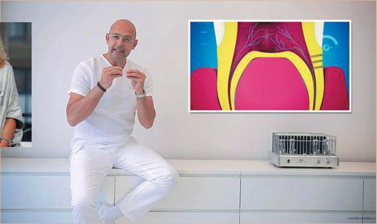
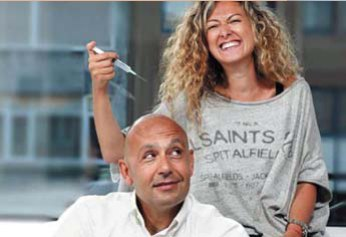
— У 2011-12 роках Ви були президентом Європейської академії естетичної стоматології, і тому два чудові весняні конгреси Академії відбулися в Туреччині. Що Вам вдалося зробити за цей час і що Ви, тепер довічний член Академії, залишили на майбутнє?
— Знаєте, коли ви президент, то на вас лежить велетенська відповідальність. Корекція наукових програм, вибір потрібних лекцій, створення приємної соціальної програми… Треба зробити, я не кажу всіх, але як мінімум більшість учасників щасливими. Майже як бути сеньйором упродовж двох років. Величезна кількість усього на твоїй відповідальності: взаємодіяти з доповідачами, із соціальними службами й індивідами; створювати позитивний імідж академії і собі також, оскільки це позначається і на тобі; вирішувати, що буде з академією в майбутньому. Це як увійти на два роки в гру і грати з тим, що є.
І друга частина Вашого запитання. Я вважаю, що кожна зустріч в Європейській академії — це досвід, обмін інформацією і роздуми про майбутнє академії, який шлях обрати і що може зробити академію сильнішою, молодшою і кращою. І щоразу ми обговорюємо підтримку наукових програм, лекторів і т.д.
— 17 років тому Ви заснували Турецьку академію естетичної стоматології. Українська академія естетичної стоматології була заснована лише торік… Які поради, виходячи зі свого досвіду розбудови академії, Ви б дали молодій Українській академії?
— Хочу сказати: будьте чесні і відкриті! Це те, що зробить вас сильними. Якщо у вас справді є ресурси, якщо ви хочете надавати щось, що справді має цінність, — неважливо, як ви упакуєте це! Можна продавати щось рік-два, а потім зникнути. Але якщо ви впевнені у тому, що несете колегам, то вам не треба давати жодних пояснень нікому. Старим стоматологічним групам, університетам чи стоматологічним асоціаціям можуть не подобатися нові речі. Можуть бути люди, які проти цього. Але якщо ви будете слухати коментарі усіх цих людей, то потрапите в таку ж пастку. Якщо ж ви вірите, що робите це краще, позитивніше, чесніше, відмінно від інших і що ви провадите гарне навчання аудиторії, то просто йдіть обраним шляхом, не намагайтеся користуватися принципом політиків «зробити всіх щасливими», тому що не можуть усі бути щасливі. Чесність і відкритість — це слова-ключі. Просто ідіть! І якщо люди підуть за вами, це означатиме, що ви робите велику справу! Якщо не підуть — значить щось неправильно. Я сподіваюся, що побачу вашу академію дуже сильною через 17 років, починаючи відлік від сьогодні.
«Якщо ви сповідуєте філософію командної роботи, кожен, хто працює з вами, може стати гарним стоматологом»
— Відомо, що Ви активно займаєтеся спортом і навіть очолювали національну збірну з водного поло. Що спорт дав Вам для успіху в естетичній стоматології? Естетична стоматологія чимось схожа на спорт?
— Це не чимось схоже… Це 100% схоже на спорт. Коли я грав у водне поло, я був капітаном національної збірної. Це величезний досвід роботи в команді взагалі. Я не хочу зараз заглиблюватися в тактику, але коли кілька членів команди задумали щось, а хтось не хоче це робити, то настає колапс усієї команди. Тому потрібно шукати вихід, як допомогти один одному. Навіть якщо програно гру, треба працювати і шукати, як повернутися. Навіть якщо тільки двоє з усієї команди невдоволені, слід шукати, як усіх згуртувати і об'єднати. Так що це був приголомшливий експірієнс. Ти можеш робити все правильно увесь рік, а у фінальній грі рефері прийме неправильне рішення — і все! Ти програв. Це так само, як і в реальному житті.
Коли я згадую про це, то розумію, що все було, як у професії. Є команда. Різні люди. Гарні особистості, погані особистості, хтось талановитіший, хтось менше, і до кожного треба знайти персональний підхід. І коли я потрапляю до когось в офіс, я ніколи не запитую, чи гарні у вас стоматологи, я запитую, наскільки добре працює команда. І коли ви сповідуєте цю філософію, кожен, хто працює з вами, може стати гарним стоматологом.
«Іти недостатньо — треба бігти»!
— Яку підтримку у Вашому бурхливому житті в естетичній стоматології надає Вам Ваша родина?
— Як я вже казав, я часто не бачу родину, тому що доводиться дуже багато працювати. Була непроста пора з моїм сином, тому що, звичайно ж, він вимагає уваги. Коли я усвідомив це, то мінімізував лекції, і тепер у нас чудові сімейні стосунки. Коли б не виникала необхідність — я поруч. Ми розмовляємо, ділимося ідеями. Це прекрасно. Лекції — це теж чудово, але потрібний баланс. Як я вже говорив на початку інтерв'ю, іноді ваше життя не контрольоване вами. Ось тоді треба сказати стоп! І прийняти правильні рішення.
— Ваш син стоматолог?
— Він не дантист, але дуже-дуже гарний хлопець. І я ніколи не штовхатиму його до стоматології. Але він усе бачить — увесь бізнес, усі реалії. І розуміє, наскільки це важко — бути кращим стоматологом. Взагалі, будь-яка успішна робота, не лише стоматолога, передбачає труднощі і великий обсяг справ. Ніхто не може стати успішним лише завдяки шансу. Необхідний талант, але необхідна і велетенська робота. А у дитини перед очима приклад — це батько. І дитина приймає рішення ніколи не обирати таку роботу, тому що це важка робота. Але потім діти розуміють, що будь-яка робота вимагає великої кількості нелегких годин і днів.
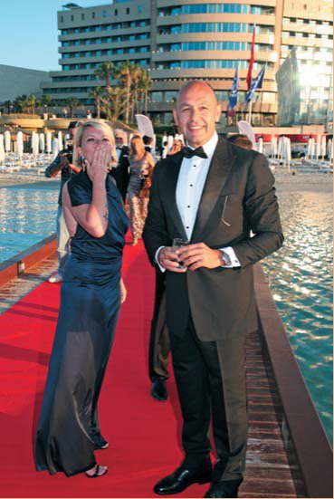
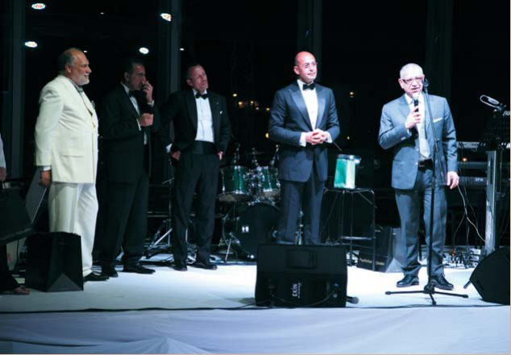
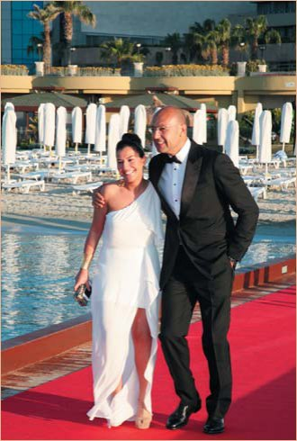
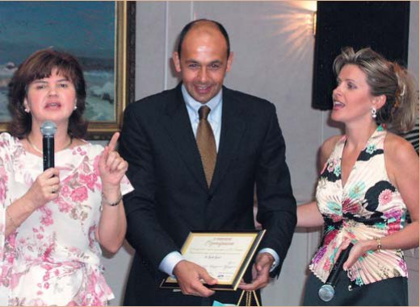
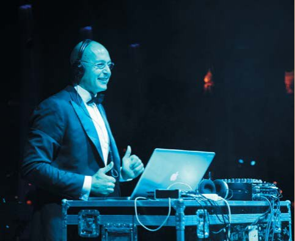
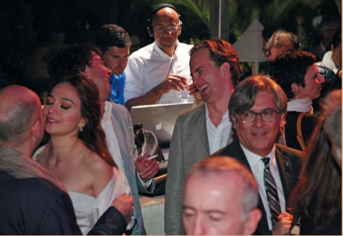
— Дякую Вам, Галіпе, за інтерв'ю нашому журналу! Які будуть Ваші побажання стоматологам — читачам «ДентАрта»?
— Ну що ж, скажу так. Іти недостатньо — треба бігти! Тому що 30 років тому, коли вас випустили з інституту, без таких зустрічей і без читання спеціальних книг знадобилося б років 15, щоб стати добрим фахівцем. Ну, а в наші дні поглиблювати свої знання набагато простіше. Я щиро бажаю всім продовжувати навчання! І Українська академія естетичної стоматології — чудова сцена для цього. Ви привозите знамениті імена, і ваші читачі-слухачі покликані взяти усі переваги від цього. Завдяки вам це можливо. І я кажу не лише про вас, але й про інші організації, які надають такі можливості.
Отже, з одного боку, слід продовжувати свою освіту, а з другого, необхідно лікувати пацієнтів — це, власне, те, що і робить вас стоматологами. І при цьому треба бути гранично етичними, гранично чесними, поліпшувати технічний потенціал і технології лікування. Є те, що я завжди роблю, коли починаю лікувати або планую починати лікування пацієнта. Я завжди запитую: що якби я був цим пацієнтом? Бажав би я такого лікування? Чи потрібне таке лікування? Чи справді це те, чого потребує пацієнт? І відповіді приходять дуже легко! Якщо ж ви бачите в пацієнтові машину для грошей — це не спрацює. Або спрацює на дуже короткий період, а в довгому забігу ви завжди програєте. І не забувайте: успішний стоматолог — це той, хто не робить дуже великого стрибка у перші роки. Треба уміти чекати, робити правильні кроки і відчувати відповідальність від того, що ви усе робите правильно. Сусід-шарлатан може сказати: я зроблю те ж саме за половину ціни і зроблю це швидше… Це привабливо для пацієнта зараз, але через 3-4-5-10 років цього стоматолога вже ніхто не захоче бачити, а у вас усе буде в порядку. Ключ — це надавати лікування, в яке ви по-справжньому вірите. Якщо ви гарний стоматолог, ви повинні правильно лікувати. Якщо пацієнт з якоїсь причини невдоволений вашим планом лікування (через ціну, або час, або ще щось), він може піти до іншого стоматолога. Але за якийсь час, коли почнуться можливі проблеми, пацієнт згадає, що йому вже пропонували правильне рішення, і повернеться до вас. Можу сказати, що 70% тих моїх пацієнтів, які відмовилися від плану лікування через ціну, повертаються, благаючи зробити все правильно тепер. Незважаючи на бажання бути орієнтованими на гроші, будьте етичні і орієнтовані на правильне лікування. І тоді 100% вам віддячиться. І через певний час ви станете сильні як ніколи.
— Дякую, Галіпе! До речі, ми знаємо, що в листопаді у Вас буде лекційний день в Україні. Бажаємо Вам дуже приємних і добрих слухачів!
— Сподіваюся! Упевнений, ми поділимося інформацією з групою з багатьох питань. Дуже новий матеріал лекцій. Цифрова частина стоматології. Те, що я збираюся зробити, — це почати із самого початку, з фундаментальних знань для людей, які тільки починають свій рух в естетичну стоматологію.
Розмовляв Сергій Радлінський.